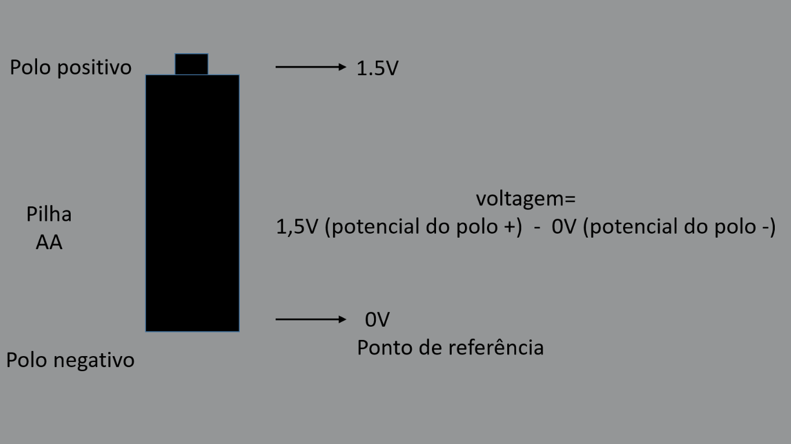

A tensão é a diferença de potencial ou “pressão” que faz a eletricidade passar, também conhecida como (DDP), e é representada pela letra v. A unidade usada para medir a tensão é o volt(v). Em homenagem ao físico italiano Alessandro Volta, que inventou a pilha. V= W/Q sendo que: V → volt W → trabalho Q → carga
A eletricidade passa de um potencial alto para um potencial baixo. A diferença de potencial entre dois pontos é chamada de tensão. Por exemplo, para a pilha AA, se deixarmos o polo negativo ser o ponto de referência, então o potencial do polo negativo é 0V e o potencial do polo positivo é 1,5V. A diferença de potencial entre os dois polos negativo e positivo é a tensão de alimentação dessa pilha. na imagem abaixo a diferença de potencial será 1,5V 